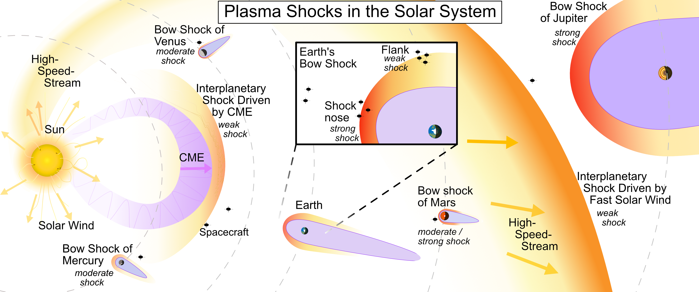
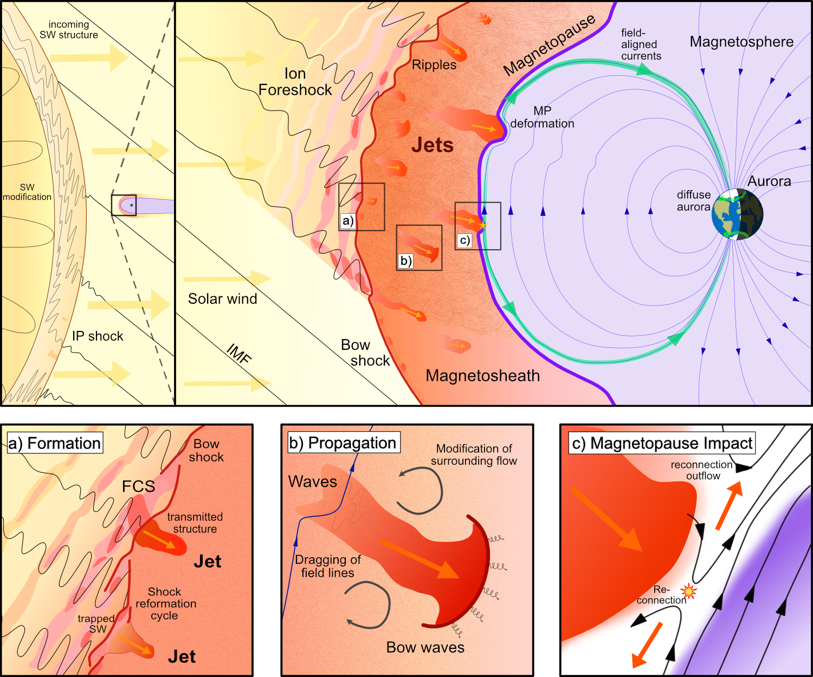
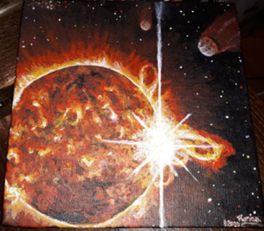
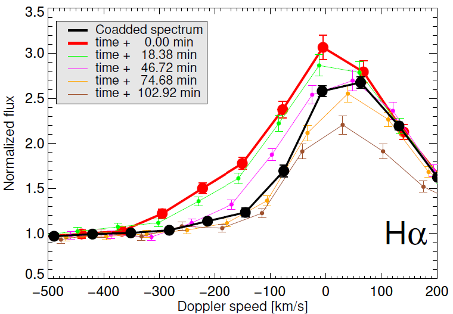

Current Research Project
SHOCKWAVE
Spacecraft Heliospheric Observation of Collisions and Kinetic Wave Analysis in Various Environments
Marie Skłodowska-Curie Postdoctoral Fellowship — Queen Mary University of London
Plasma shocks are ubiquitous phenomena in space plasmas, emerging when a supersonic and super-Alfvénic plasma flow encounters an obstacle. The solar wind is such a flow with usually high Mach numbers. Solar wind shocks occur due to two obstacles: magnetic fields of planets or much slower solar wind in front of it. The Mach number dictates the shock strength: from strong (roughly > 5) to weak (1–4).
Spacecraft in Earth's environment allowed us to study the terrestrial shock as an example of a strong shock in increasing detail in the past decades. The availability of shock measurements from other planets is increasing as well. However, most astrophysical shocks are weak, in particular shocks that have little to no in-situ measurements. The lower range of Mach number shocks is underexplored, especially with high resolution data (resolution of several seconds to milliseconds).
Our main goal is to utilize state-of-the-art spacecraft data to explore the lower Mach number range of shocks (including wave activity, jets, instabilities) and crosscheck the universality of our results with available events in the solar system. To tackle this project, we propose a 3-step analysis: 1) Comparing low and high Mach number range at the terrestrial shock, 2) Investigate interplanetary shocks using high-resolution data, and 3) Providing a comprehensive study on the transition of characteristics from low to high Mach number values.
The proposed research will be carried out in a 24-month project at the Queen Mary University of London. This institution hosts well-known international experts on shock physics and space plasma physics, providing outstanding expertise that perfectly matches the proposed efforts. The generated knowledge will deepen our understanding of shock physics with application throughout the solar system as well as general astrophysics. In particular we will apply the knowledge on interplanetary shocks, which are the precursor of strong geomagnetic storms at Earth.

Former Projects (Selection)
Magnetosheath Jets throughout the Solar Cycle
Solar wind – magnetosphere coupling processes
FWF Project — University of Graz — Run-Time: 2021–2024
Magnetosheath jets constitute a very young and rich field of research. Coordinated investigations of the origins, characteristics, evolution, and downstream consequences of magnetosheath jets have been performed just for a few years. Although many basic questions still remain unsolved, it has already become clear that jets are an important element in the frame of solar wind – magnetosphere – ionosphere interactions. In this frame, the solar cycle (quiet versus active phases), in general, and impulsive transient events (coronal mass ejections, CMEs) or periodic recurrent disruptions (corotating interaction regions, CIRs) play a major role.
Key Results
- CMEs reduce jet occurrence while high-speed streams increase it (Koller et al., 2022)
- These effects are driven by cone angle and other upstream solar wind structure parameters (Koller et al., 2023)
- The solar cycle causes little change in total jet occurrence (Vuorinen et al., 2023)
Additional Results
- Fast solar wind significantly alters ion distributions downstream of Earth's bow shock (Koller et al., 2024)
- Upstream solar wind structures and downstream jets control the plasma stability of Earth's dayside magnetosheath (Koller et al., 2025)


Stellar Activity of Late-Type Main-Sequence Stars
Stellar activity of late-type main-sequence stars in SDSS data
FWF Project — University of Graz — Run-Time: 2016–2019
Late-type main-sequence stars exhibit magnetic activity similar to our Sun, including flares and coronal mass ejections (CMEs). Understanding the frequency and properties of these events on other stars is key to assessing the habitability of exoplanets and the broader universality of solar activity phenomena. This project used large-scale optical spectroscopic data from the Sloan Digital Sky Survey (SDSS) to systematically search for flares and CME signatures in stellar spectra.
Key Results
- Identified flare and CME candidates on late-type stars via Balmer line asymmetries in SDSS optical spectra (Koller et al., 2021)
- Contributed to a broader census of CMEs on solar-like stars (Leitzinger et al., 2020)

